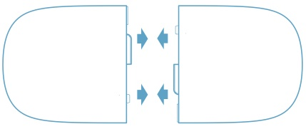
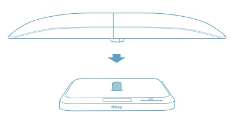
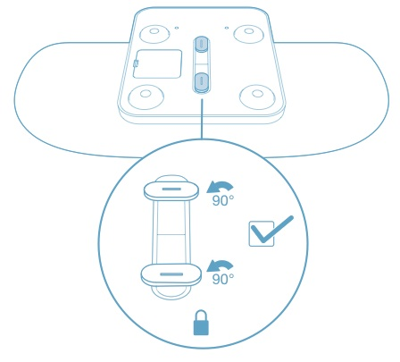

If you intend to weigh a baby, please install the baby cradle on the scale as per the below instructions:
1- Join the two half cradles together
2- Insert the cradle into the scale
3- Turn the scale over and lock the cradle